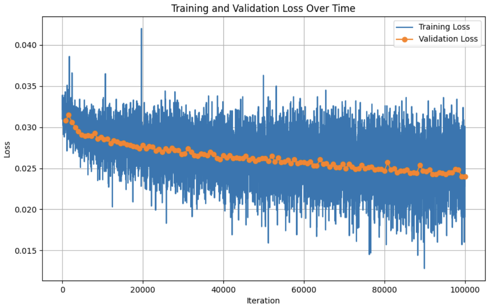

Naive Model Style Identifier Loss

By Flora Cheng and Emily Guo
16-726 Learning-Based Image Synthesis (Spring 2025)
In this project, our goal was to create a model that, given a photo of a face and a desired hairstyle, generates an image of the original face with the new hairstyle. This was inspired by prior work, including Learning to Generate and Edit Hairstyles and
K-Hairstyle: A Large-scale Korean hairstyle dataset.
Our goal was to achieve similar results with less computation and smaller image sizes.
The dataset we used was from the K-Hairstyle paper, containing approximately 500k labeled images of 31 hairstyles.
In the first part of the project, we used the architecture done in HW3 as a basis. We used the Generator and Discriminator classes we created in that homework with updates to accommodate our one-hot style vector. The updated generator takes in an image and a hot vector as input. The encoder processes the image and generates a latent, which is combined with the style vector. The resnet block decodes it back inito an image. The idea is that if the input image is given the original (correct) one-hot style vector that matches the image, the generator will return the input image. We also re-encode the image (get latent) with the original style vector to get the original input image (used for cycle loss). A style identifier is created to make sure that the images match the style that they are supposed to. It's similar to hw3 with convolution layers, then blocks of resnet blocks with average pools that halve the image size to 4x4. Then, we apply a linear and relu layer so that we get a 1 hot vector at the very end. The style loss measures how well the style identifier classifies the images into the target style. What we discovered is that our results weren't very good, and that our generated images for each of the one-hot vectors were the same image, suggesting that our style identifier is the issue. This means that it's not accurately predicting the style of images (as we discovered it was terribly wrong on even the training data). We also tried playing around with weights but the results were not significantly different. The results are below.
In the second part of this project, we tried a pretrained model, hoping that it would be better at extracting features! We changed the loss from L1/L2 to Binary Cross-Entropy. Once again, we seem to run across the same issue. It seems that our style identifier is failing us (which is not allowing the generator to be properly trained to actually generate hairstyles that we want).
We considered the possibility that the training data might not be large enough or consistent enough for models to pick up features, so we're using CLIP, which already has embeddings. so that it's learning straight from scratch and so that it can use what it has already to give us better style identifying (and style loss using cosine similarity loss)

We realized that we were training on the entire hairstyle dataset, which includes images of hairstyles from all sides, and the goal of our hair transfer is to transfer these hairstyles onto a person, which would typically involve their face as an image of a hairstyle from the back wouldn't let the user know how it would actually look on them (not really any defining features to determine that that person is who they are), so we decided to limit the data to only use relatively front facing images with plus minus 45 degrees angle so that the facial features are visible which will be similar to our user input images where they send an image of themselves in. This ended up reducing our dataset size to 97724, which is about 25% of our total dataset (validation taken from this dataset as well which is removed here), which means that we lost a large portion of data that could be useful to train our models.
Our final pipeline is as follows: face input → blur face → generate hair → transplant face → output image. When given an input image of a person's face, we start off by blurring the face of the image, which becomes our input image into the pre-trained Generator from our trainings, along with a style vector of what that person wishes their hairstyle to be. The generated image is based on the blurred face, so we want to add the face back in. If we do that, there may have been aspects in the generation process that makes the coloring, contrasting, lighting, etc. different so we use poisson blend from homework 2 to make the input face back into the generated hairstyle look more normal. For the blurred face, we used an existing face detection software called get_frontal_face_detector from the dlib library to detect faces so that we're accurately blurring the face of our person instead of having a set location blurred for an image.

We were able to demonstrate that CLIP-based embeddings and better architecture choices significantly improved visual fidelity and consistency. However, our results seem to be suffering from our style identifier, which is resulting in not having different generate images (besides the slight change in the hair part as you see above). Future work would involve more existing models for the style identifier to determine how that could improve our results.